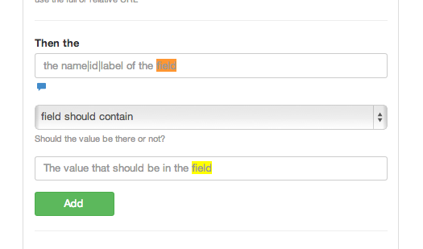

This is to find text on a page. Keep in mind some text might not be text or not be as you see it.
For example you may have
html
<h1>hello</h1> there
And you are trying to see "hello there" it may not work. So always check the source.
Also for input fields use the

And for elements like classes etc check
Then I see this element exists